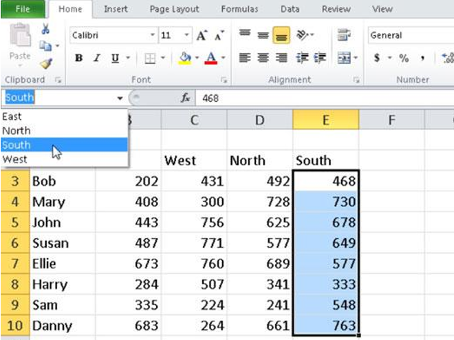
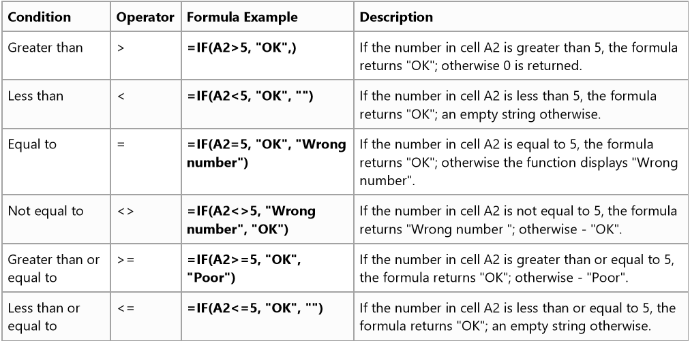
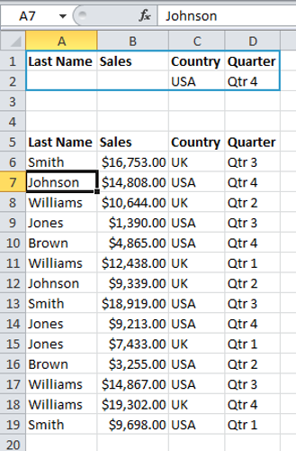

Work Smart with Excel
Tips and tricks for Excel
Interesting facts about Excel
Excel. A grid interface to organize nearly any type of information.
Do you know Excel is Microsoft’s first Office application which was originally released under the name Multiplan in 1982, Microsoft changed the name to Excel when first releasing it for the Macintosh in 1985. Since Excel was initially launched on the Macintosh, its first release for Windows in 1987 was already version 2.0.
Excel. Ability to handle 1,048,576 rows by 16,384 columns for each worksheet.
The power of Excel lies in it's flexibility to define the layout and structure of the information you want to manage. Excel is used widely in any financially-related activity. The ability to create new spreadsheets where users can define custom formulas to calculate anything from a simple quarterly forecast to a full corporate annual report makes Excel highly appealing. Other applications include tracking like a list of sales leads, project status reports, contact lists, invoicing and statistical analysis with large data sets. Let's see how it works!
Tips and tricks
- Master keyboard shortcuts
- Using Fill
- Cell References
- Naming Cells and Ranges
- Logical Functions
- Conditional Formats
- Control Worksheetsl
- Find And Replace
- Sort Data Lists
- Filtering Lists
- Creating Charts
- Format Chart
Master those keyboard shortcuts.
Some keyboard shortcuts for the most commonly used features in Excel.
- Ctrl + Space: Select column.
- Shift + Space Select row.
- Ctrl + '-' (minus sign) Delete row(s)/ column(s).
- Ctrl + D Fill down.
- Ctrl + R Fill right.
Cheatsheet with full list of Excel keyboard shortcuts (pdf)
Using Fill
One of the most popular questions is how to autofill numbers in Excel. This can also be dates, times, days of the week, months, years and so on. In addition, Excel's AutoFill will follow any pattern.
For example, if you need to continue a sequence, just enter the first two values into the starting cell and grab the fill handle to copy the data across the specified range.
Relative/ Absolute Cell References
By default, Excel uses relative reference. Relative cell references are basic cell references that adjust and change when copied or when using AutoFill. Situations arise in which the cell reference must remain the same when copied or when using AutoFill. Dollar signs '$' are used to hold a column and/or row reference constant.
Naming Cells and Ranges
Assign a descriptive name to a cell or range to help make formulas in your worksheets much easier to understand and maintain. Range names make it easier for you to remember the purpose of a formula, rather than using obscure cell references.
To use the named range, click the down arrow in the Name box at the left end of the Formula bar. 
Logical Functions
The IF function is one of Excel's logical functions that evaluates a certain condition and returns the value you specify if the condition is TRUE, and another value if the condition is FALSE.
The table below demonstrates the IF formula with the "Greater than or equal to" logical operator in action: 
Conditional Formats
Applying conditional formatting to data can help you, at a glance, quickly identify variances in a range of values. Some of the rules that are available with conditional formatting include the following:
Control Worksheets
Some keyboard shortcuts for controlling worksheets in Excel.
- Ctrl + Arrow: Move to the edge of your current data region.
- Shift + Page Up Next Sheet.
- Ctrl + Page Down Previous Sheet.
- Sheet Actions Drag to move a sheet.
- Drag + CTRL to copy a sheet.
- Right Click to move or copy a sheet in another Excel file open in the same Excel program.
Find And Replace
You can use Excel's Find and Replace feature to quickly find specific text and replace it with other text.
You can use Excel's Go To Special feature to quickly select all cells with formulas, comments, conditional formatting, constants, data validation, etc.
Sort Data Lists
With built-in custom lists, you can sort data by days of the week or months of the year. Or create your own custom lists to sort by any other characteristic that doesn’t sort well alphabetically, such as high, medium, and low or S, M, L, XL.
Filtering Lists
When you use the Advanced Filter, you need to enter the criteria on the worksheet. Create a Criteria range (blue border below for illustration only) above your data set. Use the same column headers. Be sure there's at least one blank row between your Criteria range and data set.

Creating Charts
To insert a chart, select the date you wish to appear in the chart, and then go to the Insert Ribbon (if the data is noncontiguous, you can select one set, then hold down the Control key on the keyboard to select the second set). In the Charts Group, choose the type of chart you’d like. Click on the arrow below the type icon to see the subtypes.
Format Charts
Once your chart appears in Excel, there are many ways to modify the way it looks and its location. A few ways are described below, but explore to find more! In all cases, you have to select the chart first to see the context sensitive Ribbons (Design, Layout, and Format).
Best Practices*
------ Practise! Practise! And Practise! ------------- Get your hands dirty and have fun! -----